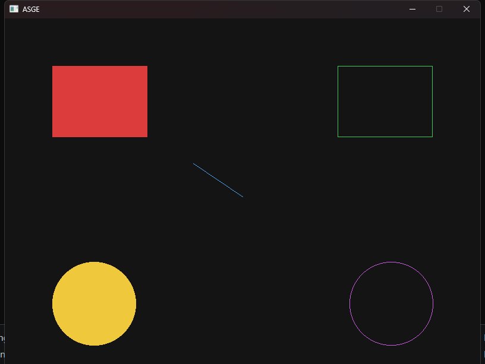

← All examples
Rendering
Shapes
Every primitive ASGE can draw
A single screen that exercises every primitive on IRenderer — filled and outlined rectangles, circles, lines and points — including a line swept through a full rotation to show angle handling.
There's no game logic here: shapes_demo exists purely as a visual reference for the rendering-primitives phase of the roadmap.
No input — purely a visual reference for this subsystem.

Run it yourself
build just this example
cmake --build --preset windows-debug --target shapes_demo
# binary lands under bin/ (e.g. bin/Debug/shapes_demo.exe on Windows)See Installation for the full build setup.
Source
examples/shapes_demo/Game.hpp
#pragma once
#include <ASGE/ASGE.hpp>
class ShapesDemoState final : public asge::game::state::IGameState<int>
{
float m_LineAngle{0.0f}; // Drives the sweeping DrawLine demo
public:
[[nodiscard]] std::optional<asge::game::state::Transition<int>>
Update(float inDeltaTime, asge::input::InputState const& inInput) override;
void Render(asge::video::IRenderer& inRenderer) override;
void OnSystemEvent(asge::event::SystemEvent const& inSysEvent) override;
};
class ShapesDemoGame final : public asge::game::Game<int>
{
public:
explicit ShapesDemoGame(asge::video::IRenderer& inRenderer, asge::audio::AudioDevice& inAudioDev);
protected:
[[nodiscard]] std::unique_ptr<StateType> CreateState(int inId) override;
};
examples/shapes_demo/Game.cpp
#include "Game.hpp"
#include <cmath>
namespace
{
constexpr float LINE_SWEEP_SPEED = 1.5f; // radians per second
constexpr float LINE_RADIUS = 100.0f;
const asge::math::Float2 LINE_ORIGIN{ 400.0f, 300.0f };
}
std::optional<asge::game::state::Transition<int>>
ShapesDemoState::Update(float inDeltaTime, [[maybe_unused]] asge::input::InputState const& inInput)
{
m_LineAngle += LINE_SWEEP_SPEED * inDeltaTime;
return std::nullopt;
}
void ShapesDemoState::Render(asge::video::IRenderer &inRenderer)
{
inRenderer.Clear({ 20, 20, 20, 255 });
// Filled rect
inRenderer.DrawRect(
asge::math::Rect{ 80.0f, 80.0f, 160.0f, 120.0f },
{ 220, 60, 60, 255 },
true
);
// Outlined rect
inRenderer.DrawRect(
asge::math::Rect{ 560.0f, 80.0f, 160.0f, 120.0f },
{ 60, 200, 90, 255 },
false
);
// Sweeping line, to exercise DrawLine
asge::math::Float2 tip{
LINE_ORIGIN.x() + std::cos(m_LineAngle) * LINE_RADIUS,
LINE_ORIGIN.y() + std::sin(m_LineAngle) * LINE_RADIUS
};
inRenderer.DrawLine(LINE_ORIGIN, tip, { 80, 160, 240, 255 });
// Filled circle
inRenderer.DrawCircle(
asge::math::Int2{ 150, 480 }, 70,
{ 240, 200, 60, 255 },
true
);
// Outlined circle
inRenderer.DrawCircle(
asge::math::Int2{ 650, 480 }, 70,
{ 200, 90, 220, 255 },
false
);
}
void ShapesDemoState::OnSystemEvent([[maybe_unused]] asge::event::SystemEvent const &inSysEvent)
{
}
ShapesDemoGame::ShapesDemoGame(asge::video::IRenderer& inRenderer, asge::audio::AudioDevice& inAudioDev)
: Game(inRenderer, inAudioDev)
{
SetInitialState(0);
}
std::unique_ptr<ShapesDemoGame::StateType> ShapesDemoGame::CreateState([[maybe_unused]] int inId)
{
return std::make_unique<ShapesDemoState>();
}